ВСАДНИКИ ОДИНОЧЕСТВА
Пространство встречи.
Время для диалога.
Живой тренинг Александра Цапенко. Личная тема, близкий контакт с аудиторией и выразительная атмосфера московского лофта.
Личная тема.
Живое присутствие.
«Всадники одиночества» — авторский проект Александра Цапенко о взаимоотношениях. На живой встрече разговор вышел за рамки экрана: автор и участники оказались в одном пространстве.
SPACE взял на себя полную организацию мероприятия: от поиска площадки и партнёров до кейтеринга и технического обеспечения. Кирпичные стены, деревянные конструкции и мягкий свет стали основой камерной обстановки, а оформление и материалы участников поддержали образ проекта.
Атмосфера складывается
из деталей.
Ряды деревянных стульев, именные материалы, подарочные наборы и оформленная зона выступления. Каждый элемент помогает гостям почувствовать характер встречи ещё до начала программы.
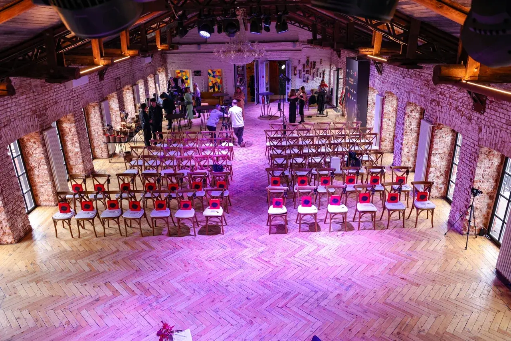
До начала встречи.
В центре события.
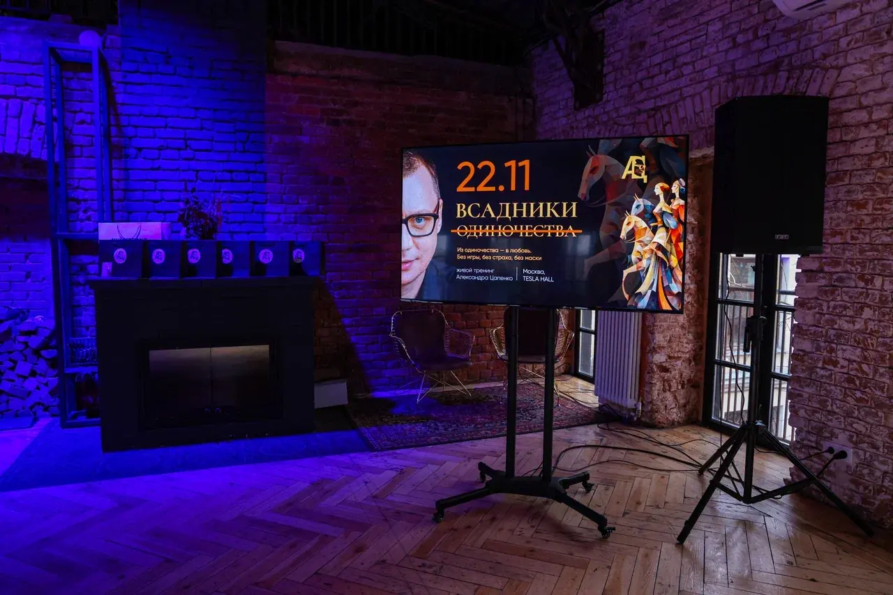
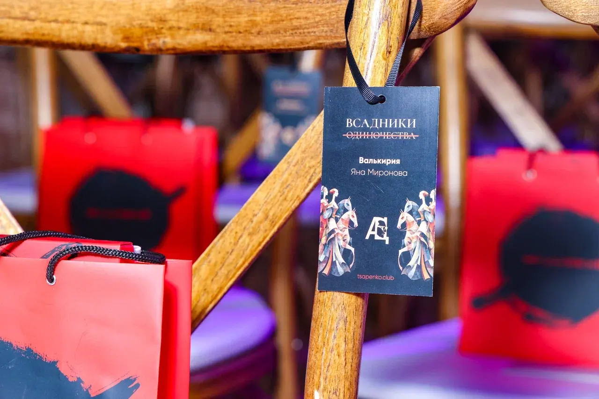
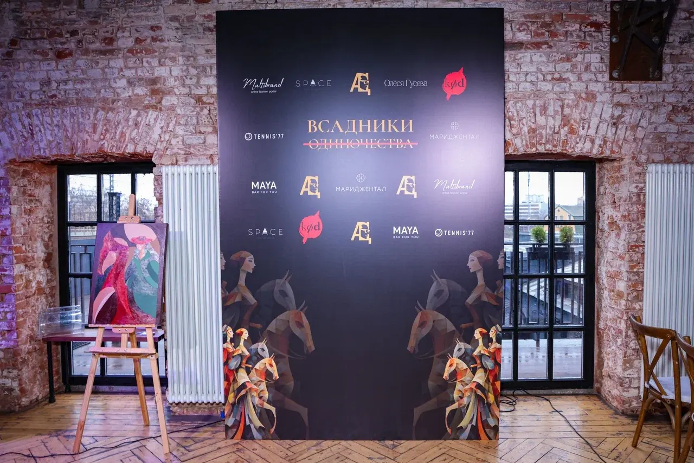
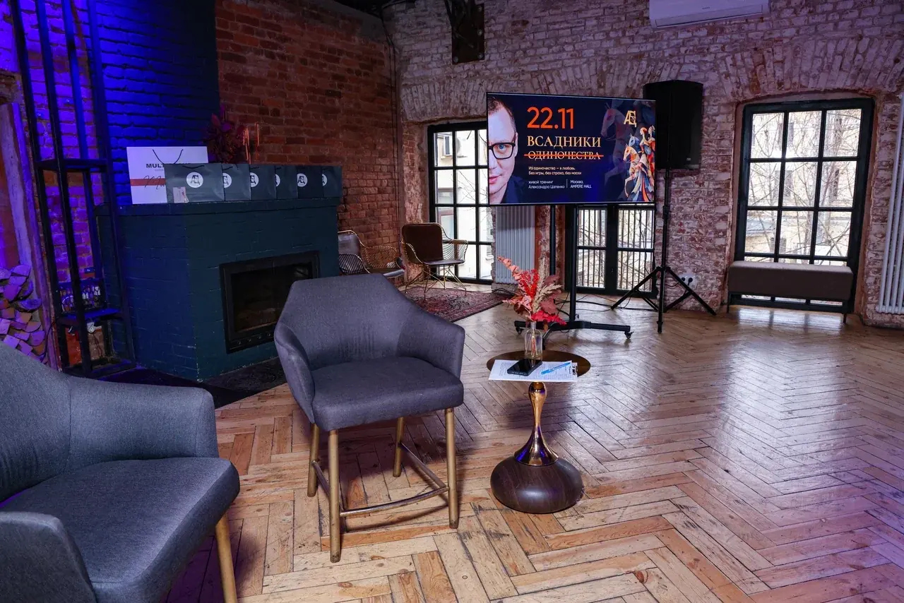
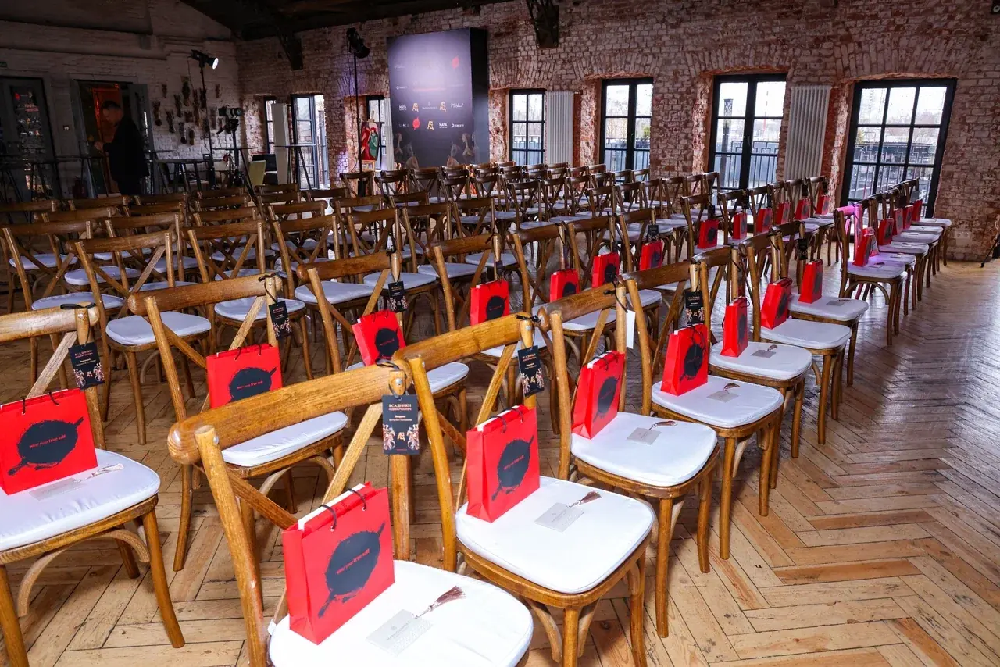
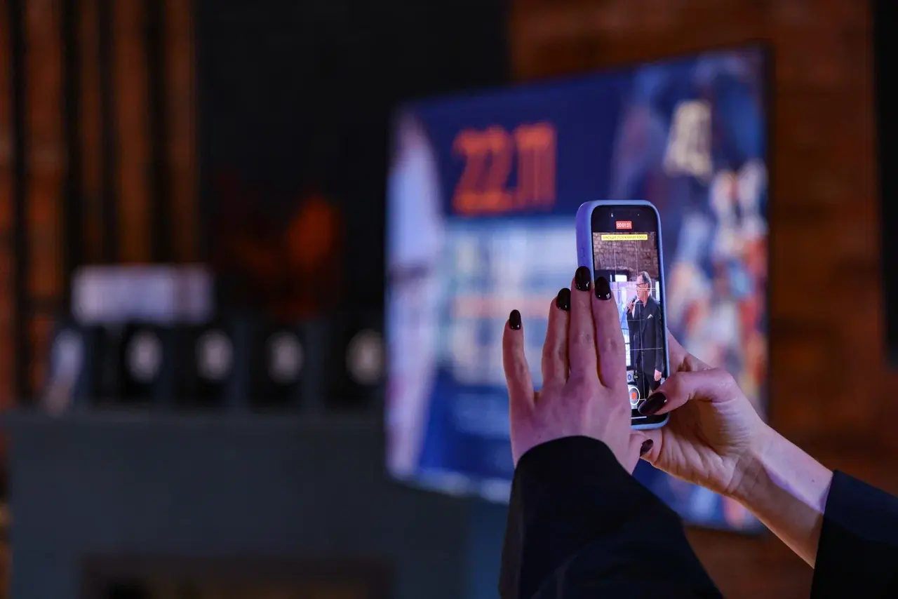
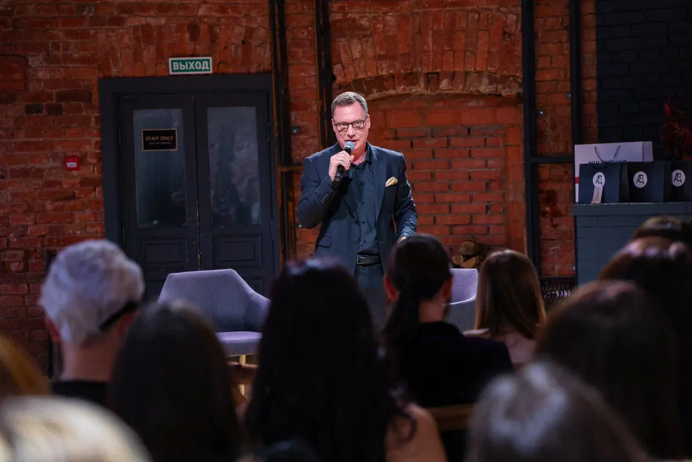
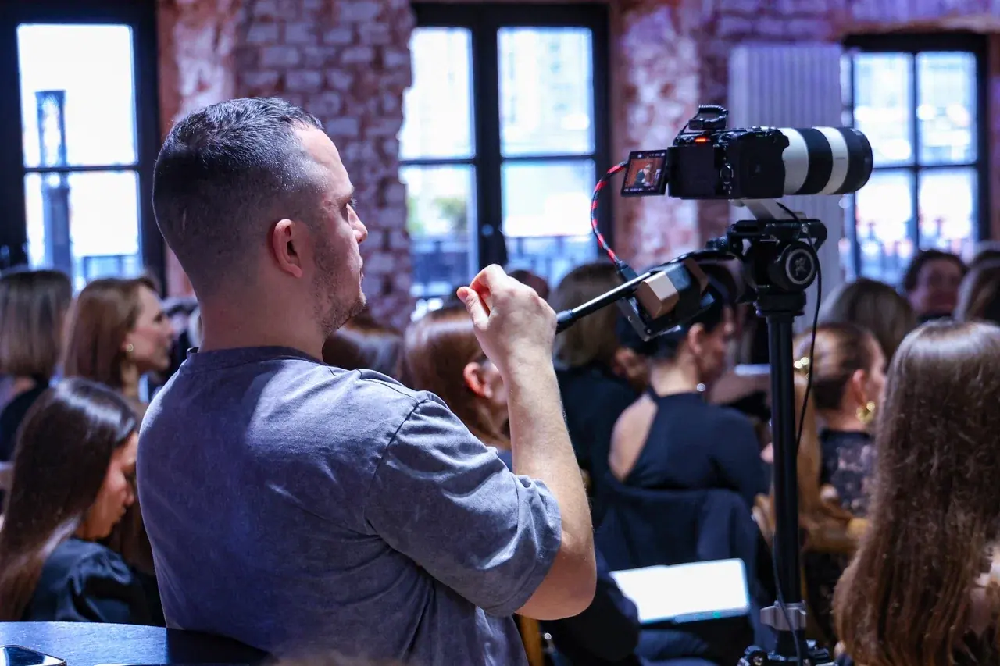
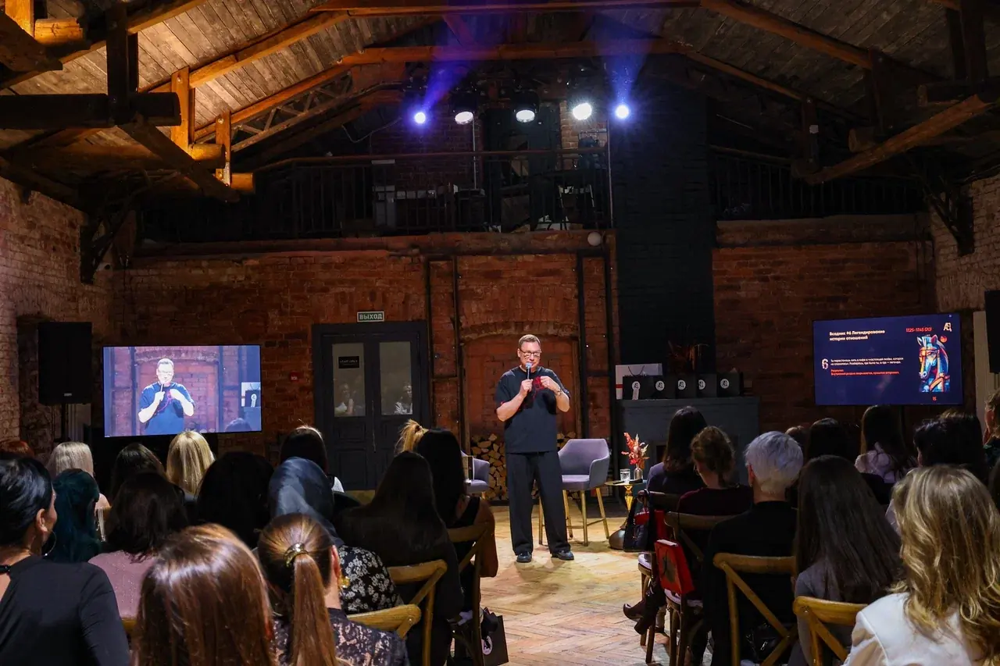
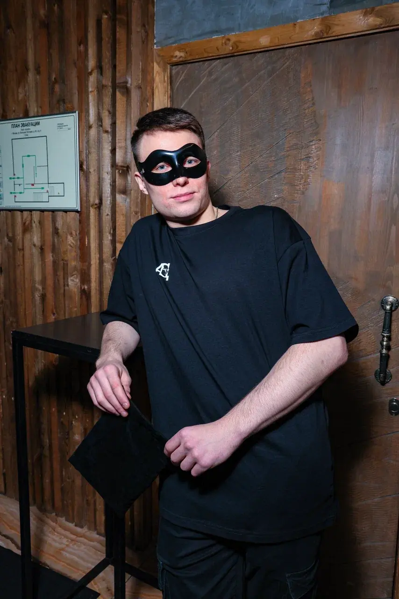
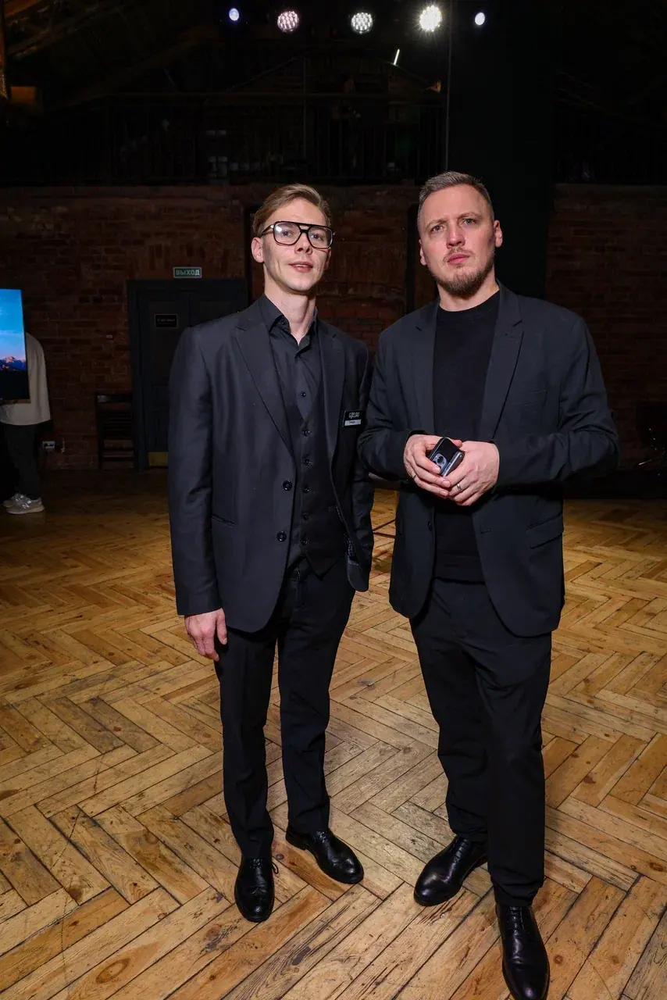
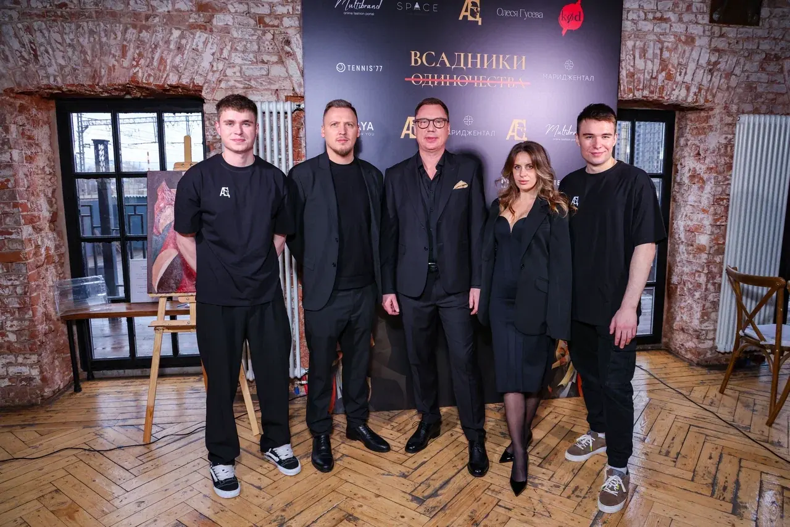
Одна команда.
Весь путь события.
Мы организовали встречу под ключ: нашли площадку под формат тренинга, обеспечили кейтеринг и техническую часть, привлекли партнёров. От подготовки до проведения — собрали необходимые процессы в общий план.
Площадка, свет, звук, питание и партнёрское участие работали на одну задачу: дать автору и гостям пространство для содержательной встречи.
СЛЕДУЮЩИЙ ПРОЕКТ